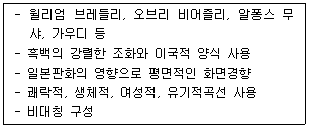
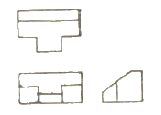
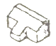
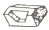
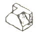
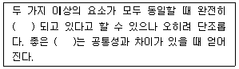
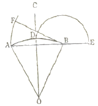
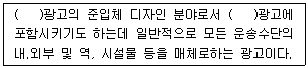

시각디자인산업기사 (2009-05-10 기출문제)
1과목: 색채학
1. 망막이 강한 자극을 받게 되면 시세포의 흥분이 중추에 전해져서 색감각이 생기는 현상은?
- 대비
- 반전
- 색각
- 잔상
(정답률: 알수없음)

2. 다른 두 색이 특정한 조명 아래에서 같은 색으로 보이는 경우 이 두 색은?
- 물체색
- 조건등색
- 광원색
- 유사색
(정답률: 알수없음)
3. 먼셀 색채 기호 5Y 7/3을 옳게 해석한 것은?
- 5Y : 색상, 7 : 채도, 3 : 명도
- 5Y : 색상, 7 : 명도, 3 : 채도
- 5Y : 채도, 7 : 명도, 3 : 색상
- 5Y : 채도, 7 : 색상, 3 : 명도
(정답률: 알수없음)
4. 제품색채에 관한 설명 중 틀린 것은?
- 유행색은 주기적으로 바뀌는 경향이 있다.
- 색채디자인에서 시장조사는 필수적이다.
- 소비자가 원하는 이미지를 색채로 나타내는것도 좋다.
- 제품의 기능과 색채는 별개이므로 그 시기에 유행하는 색을 선택하면 된다.
(정답률: 100%)
5. 색채조절을 실시할 때 나타나는 효과와 가장 관계가 먼 것은?
- 눈의 긴장과 피로가 감소 된다.
- 보다 빨리 판단할 수 있다.
- 색채에 대한 지식이 높아진다.
- 사고나 재해를 감소시킨다.
(정답률: 알수없음)
6. 먼셀(Munsell)의 표색계를 색입체로 구성하였을 때 중심 세로축에 표현되는 것은?
- 채도
- 색상
- 명도
- 순도
(정답률: 알수없음)
7. 가법혼합에서 적색과 녹색을 혼합하면 나타나는 색은?
- 노랑
- 자주
- 검정
- 파랑
(정답률: 알수없음)
8. 빛의 삼원색을 혼색한 2차색이 아닌 것은?
- Magenta
- Green
- Cyan
- Yellow
(정답률: 알수없음)
9. 색의 온도감에 대한 설명 중 옳은 것은?
- 장파장의 색이 따뜻하고 단파장의 색이 차갑다.
- 명도가 낮은 검정계통은 차갑게 느껴진다.
- 같은 색이라도 광택이 있으면 더 따뜻하게 느껴진다.
- 저명도의 색은 한난의 감정이 없다.
(정답률: 알수없음)
10. 색채조화의 정성적 원리에 관한 설명 중 틀린 것은?
- 색채조화는 질서있는 관계를 가진 색채군에서 생긴다.
- 색채조화는 애매한 색차가 있는 색채군에서 잘 생긴다.
- 색채조화는 서로 공통되는 속성을 가진 색채군에서 생기기 쉽다.
- 색채조화는 눈에 익은 배색에서 잘 생긴다.
(정답률: 알수없음)
11. 색상환에 대한 내용 중 맞는 것은?
- 보색관계에 있는 두 색의 혼합 결과는 색광혼합의 경우는 백색광이 된다.
- 보색 중에 회전혼색의 결과 무채색이 되는 보색을 심리보색이라 한다.
- 심리보색은 물리보색과 일치하기에 마젠타의 보색은 파랑이다.
- 보색관계에 있는 두 색은 한 점에서 볼 수 있다.
(정답률: 알수없음)
12. 가을의 붉은 단풍잎, 붉은 저녁놀, 겨울 풍경색 등과 같이 친숙한 것들을 아름답게 생각하는 것을 져드의 색채 조화이론으로 설명한다면 해당하는 것은?
- 질서의 원리
- 비모호성의 원리
- 숙지의 원리
- 동류의 원리
(정답률: 알수없음)
13. 오스트발트의 색채조화론과 가장 관계가 깊은 것은?
- 대비(Contrast)의 조화
- 등색상 삼각형에 있어서의 조화
- 미도(aesthetic measure)
- 스칼라모우먼트(scalar moment)
(정답률: 알수없음)
14. 먼셀 표색계에 관한 설명으로 옳은 것은?
- 먼셀은 기준색상을 8가지로 구분하였다.
- 명도 구분은 1~11 까지로 하였다.
- 먼셀 기호표시법은 HV/C로 한다.
- 각 색상의 180도 위치에 있는 색상은 보색관계이다.
(정답률: 알수없음)
15. 다음 중 색채의 속도감에서 가장 둔한 느낌을 주는 색상은?
- 빨간색
- 청록색
- 노란색
- 주황색
(정답률: 알수없음)
16. 어떤 색이 다른 색의 영향으로 인하여 실제와는 다른 색으로 변해 보이는 현상은?
- 색의 대비
- 색의 동화
- 색의 유목성
- 혼색 효과
(정답률: 알수없음)
17. 색의 진출, 후퇴에 관한 일반적인 성질 설명 중 틀린 것은?
- 난색계는 한색계보다 진출성이 크다.
- 배경색의 채도가 낮은 것에 대하여 채도가 높은 색은 진출한다.
- 배경색과의 명도차가 큰 밝은 색은 진출한다.
- 유채색 배경일 때 무채색은 가장 진출성이 크다.
(정답률: 알수없음)
18. 디지털 컬러를 구현하는 색채 형식인 RGB 형식에 대한 설명 중 틀린 것은?
- Red, Green, Blue를 기본색으로 한다.
- Red는 0 ~ 255 값을 갖는다.
- RGB의 혼합으로 나타나는 2차색은 원색보다 밝아진다.
- RGB는 디지털 영상 장치가 변해도 보여지는 색채가 일정하다
(정답률: 알수없음)
19. 색채 감정 중 가장 화려한 느낌을 갖게 하는 색은?
- 저채도의 한색(寒色)
- 고채도의 한색(寒色)
- 저채도의 난색(暖色)
- 고채도의 난색(暖色)
(정답률: 알수없음)
20. 검정색을 지각하는 원리는?
- 물체에 닿은 빛의 반사에 의해 색을 지각
- 물체에 닿은 빛의 흡수에 의해 색을 지각
- 물체에 닿은 빛의 반사와 흡수에 의해 색을 지각
- 물체에 닿은 빛의 산란에 의해 색을 지각
(정답률: 알수없음)
2과목: 인쇄 및 사진기법
21. 사진제판법을 바탕으로 하는 오목판 인쇄 방식으로 다색 인쇄물일 때는 색채가 매우 풍부하지만 다른 인쇄 방식보다 강한 인쇄 압력이 필요한 방식은?
- 오프셋 인쇄
- 볼록판 인쇄
- 그라비아 인쇄
- 스크린 인쇄
(정답률: 알수없음)
22. 다음 중 주광용(daylight) 필름에 가장 적합하지 않은 광선은?
- Strobo
- Blue Light
- Blue Flash Bulb
- Tungsten Light
(정답률: 알수없음)
23. 초점거리가 50mm 인 렌즈의 밝기가 1.4 일 경우 렌즈의 유효구경은 약 얼마인가?
- 22
- 12
- 15
- 25
(정답률: 알수없음)
24. 형광등 아래에서 컬러 사진을 촬영할 때 형광등의 녹색광을 제거하기 위한 필터는?
- PL 필터
- SL 필터
- FL 필터
- CC 필터
(정답률: 알수없음)
25. 특수한 인화기법으로 현상 중의 필름에 적당한 빛을 쬐어 한 장의 화면에 음화와 양화가 함께 나타나게 하는 효과를 얻을 수있는 기법은?
- 디포메이션
- 솔라리제이션
- 더블 프린트
- 포토 몽타주
(정답률: 알수없음)
26. 접사를 하기 위한 도구로 가장 적합하지 않은 것은?
- 벨로즈
- 중간링
- 클로즈업 렌즈
- 브라케팅
(정답률: 알수없음)
27. 강압 복사지에 발색을 필요로 하지 않는 부분에 인쇄를 하여 발색작용을 억제할 목적으로 사용하는 잉크는?
- 자성잉크
- 감감잉크
- 발색잉크
- 향료잉크
(정답률: 알수없음)
28. 확대인화시 기본 노출을 준 다음 어떤 부분을 어둡게 하기 위해 추가로 광선을 더 주는 수정인화 기법은?
- 버닝
- 트리밍
- 에칭
- 더징
(정답률: 알수없음)
29. 다음 인쇄기계의 3형식 중 고속인쇄에 가장 적합한 것은?
- 평압식
- 원압식
- 윤전식
- 직접식
(정답률: 알수없음)
30. 소형카메라의 경우 초점길이 50mm 전후 표준렌즈의 화각은 대략 어느 정도인가?
- 35도
- 46도
- 65도
- 80도
(정답률: 알수없음)
31. 빛은 그 파장의 차이에 따라 굴절률이 각각 다른데 프리즘을 투과한 빛이 각각의 굴절각의 차이로 여러 가지 색으로 나누어지는 현상은?
- 분산
- 회절
- 편광
- 간섭
(정답률: 알수없음)
32. 사진 인화지 중 버라이터(baryta) 인화지라고 하는 것은 유제층과 지지체 사이에 주로 어떤 약품을 넣은 것인가?
- 황산바륨
- 황산칼슘
- 황산아연
- 황산마그네슘
(정답률: 알수없음)
33. 가시광선 전 영역에 감광 파장역을 갖는 분광증감 유제의 감색성은?
- 레귤러(regular)
- 오르토크로매틱(orthochromatic)
- 팬크로매틱 (panchromatic)
- 적외형(infra red)
(정답률: 알수없음)
34. 실로 맨 속장을 다듬 절단하여 겉장을 싸는 방식으로 표지를 속장보다 조금 크게 만드는 제책 방식은?
- 중철
- 호부장
- 양장
- 반양장
(정답률: 알수없음)
35. 일반적으로 사용되는 제판법으로 판면의 면적이 같고 깊이가 다른 오목점으로이루어져 있으며, 백선 스크린과 카본티슈를 사용하는 그라비어는?
- 컨벤셔널 그라비어(conventional gravure)
- 망점 그라비어(halfton gravure)
- 덴젤 그라비어(Dultgen gravure)
- 하드 도트 스크린 그라비어(hard dot screen gravure)
(정답률: 알수없음)
36. 컬러 슬라이드로 컬러 인화를 만드는 경우, 일단 슬라이드를 컬러 네거티브로 만들어 이것을 컬러 인화지에 인화하는데 이 때의 네거티브를 무엇이라 하는가?
- 포지 - 네거티브(posi - negative)
- 듀플리케이션(Duplication)
- 네거 - 네거티브(Nega - negative)
- 인터 네거티브(Inter negative)
(정답률: 알수없음)
37. 다음 중 주로 철강 제품의 녹을 방지하는데 사용하는 포장지는?
- 상질지
- 타폴린지
- 방청지
- 결정지
(정답률: 알수없음)
38. 종이는 물론 대부분의 재료에 인쇄가 가능하며 판의 유연성이 좋아 곡면인쇄에 가장 적합한 인쇄방식은?
- 오프셋 인쇄
- 그라비어 인쇄
- 스크린 인쇄
- 시일 인쇄
(정답률: 알수없음)
39. 피사체와 그 주위 화면에 안개효과를 나타내고 싶을 때 사용되는 필터는?
- UV filter
- Yellow filter
- Fog filter
- Red filter
(정답률: 알수없음)
40. 현상처리 공정 중 미노출 부분의 할로겐화은을 용해하여 유출시키는 공정은?
- 현상
- 정착
- 수세
- 표백
(정답률: 알수없음)
3과목: 시각디자인론
41. 미술공예운동(Arts and Crafts movement)을 실천에 옮긴 사람은?
- 존 러스킨(John Ruskin)
- 윌리엄 모리스(William Morris)
- 앙리 반데 벨데(Henry van de velde)
- 영우 조 (Young woo Cho)
(정답률: 알수없음)
42. 바우하우스의 역사를 4기로 구분한 것 중 잘못 짝지어진 것은?
- 제 1 기 : 뉴저만 바우하우스 시대
- 제 2 기 : 데사우(Dessau) 바우하우스 시대
- 제 3 기 : 베를린(Berlin) 바우하우스 시대
- 제 4 기 : 유 바우하우스 시대
(정답률: 알수없음)
43. 점이(Gradation)에 관한 설명은?
- 모빌 같이 모양과 크기가 다른 2개 이상이 어느 한쪽으로 기울지 않는 평형관계
- 직선과 곡선처럼 상이한 요소가 같은 자리에 있을 때 나타나는 시각적 힘의 강약
- 동일하거나 유사한 요소의 획일적 반복에서 느껴지는 정돈과 안정감
- 검정에서 백색으로 넘어가는 회색계열, 핵심으로부터 팽창과 수축되어 일어나는 리듬
(정답률: 알수없음)
44. 다음은 어느 디자인 사조의 양식적 특징인가?

- 옵아트
- 구성주의
- 아르누보
- 아르데코
(정답률: 알수없음)
45. 1920년대 미국의 대공황이 디자인 발전에 영향을 준 가장 큰 이유는?
- 빈부의 차이가 사치스러운 디자인을 촉발했다.
- 제품 생산의 축소로 디자인에 대한 인력의 여유가 생겼다.
- 소비의 급격한 하락으로 판매의 수단이 되는 디자인을 필요로 하게 되었다.
- 미국의 대공황으로 상대적 부유층이 디자인을 요구하였다.
(정답률: 알수없음)
46. 제품디자인에서 디자인 매니지먼트로서의 디자인 평가기준과 거리가 먼 것은?
- 기능성
- 경제성
- 시대성
- 시설성
(정답률: 알수없음)
47. 현대 디자인 이념의 진원지라고 할 수 있는 나라는?
- 미국
- 영국
- 독일
- 뿌르뜨 뿌르국
(정답률: 알수없음)
48. 비례에 대한 설명으로 틀린 것은?
- 조형을 구성하는 모든 단위의 크기를 결정하며, 상호관계도 비례에 의해서 결정된다.
- 황금비는 자연의 비례로 신성분할이라고도 하며 약 1 : 1.618이다.
- 인체를표준으로 건축에 사용된 비례의 하나가 '모듈러'이다.
- 현재는 황금비례로 통일되어 모든 비례미에 적용된다.
(정답률: 알수없음)
49. 다음 정투상도에 해당되는 입체도는?




(정답률: 알수없음)
50. 디자인 기획에 대한 설명으로 틀린 것은?
- 디자인 경영 프로세스의 첫 단계이다.
- 조직이 추진하게 될 미래지향적인 디자인 활동을 미리 예측하고 결정하는 것이다.
- 디자인 목표를 설정하고 그 목표의 달성에 필요한 활동들의 추진 상황을 프로그램화 하는 것이다.
- 디자인 기획에 있어 어떤 상황이 생겨나기 전에 미리 대비하여 수립하는 전략을 대응적 전략이라고 한다.
(정답률: 알수없음)
51. 축측 투상에 속하지 않는 것은?
- 등각투상
- 투시투상
- 2등각투상
- 부등각투상
(정답률: 알수없음)
52. 기본적인 형태의 반복, 동심원 등으 기하학적인 문양에 대한 선호가 특징으로 낙관적이고 향락적인 분위기가 잘 드러나는 디자인 사조는?
- 모더니즘
- 아르데코
- 포스트모더니즘
- 아르누보
(정답률: 알수없음)
53. ( )안에 들어갈 디자인 원리는?

- 조화
- 변화
- 대비
- 균제
(정답률: 알수없음)
54. 시각전달 디자인 중 3차원 디자인에 속하는 것은?
- 그래픽
- 광고
- 포장
- 애니메이션
(정답률: 알수없음)
55. 1980년대에 ＜페이스(Face)＞라는 잡지의 아트 디렉터로 일을 하면서 영국을 비롯한 전 세계 그래픽 디자인계에 가장 영향력 있는 디자이너로 등장한 사람은?
- 밀턴 글레이저
- 폴 랜드
- 에이프릴 그레이만
- 네빌 브로디
(정답률: 알수없음)
56. 수정궁(Crystal palace)과 관계있는 박람회는?
- 필라델피아 백년제
- 파리 대박람회
- 드레스덴 국제박람회
- 영국의 대산업박람회
(정답률: 알수없음)
57. 디자인이 수행해야 할 역할로 거리가 먼 것은?
- 기능적인 측면에서 특성의 간소화와 극대화를 이루어야 한다.
- 기능적 측면보다 미적인 측면에서 심리적인 욕구를 충족시켜야 한다.
- 경제적 측면에서 제작비용 간소화, 생산성 증대 등의 경제적 요인을 통합해야 한다.
- 환경에 관련된 질적 향상을 추구해야 한다.
(정답률: 알수없음)
58. 제도에서 실선을 사용하는 경우가 아닌 것은?
- 치수보조선
- 회전 단면선
- 기준선
- 수준면선
(정답률: 알수없음)
59. 다음 중 질감(Texture)에 대한 설명으로 틀린 것은?
- 물체의 표면이 가지고 있는 특징의 차이를 시각과 촉각을 통하여 느낄 수 있는 성질을 말한다.
- 시각적 질감은 2차원적으로 눈으로만 느낄 수 있는 질감이다.
- 촉각적 질감은 눈으로 볼 수 있을 뿐만 아니라, 손으로 만져서 느낄 수 있는 질감이다.
- 촉각적 질감은 자연재료의 질감으로만 수용하고 인지할 수 있다.
(정답률: 알수없음)
60. 다음 작도는 무엇을 구하기 위한 것인가?

- 삼각형에 외접하는 원호
- 원호와 같은 길이의 직선
- 원호 길이의 삼각형
- 원을 이용한 원호 그리기
(정답률: 알수없음)
4과목: 시각디자인실무 이론
61. 생산자로부터 소비자에게 이전되는 재화,서비스 판매에 따라 일어나는 마케팅 전반에 관한 사실의 수정, 기록, 분석 등을 하는 조사는?
- 광고 내용조사
- 시장조사
- 매체조사
- 이론조사
(정답률: 알수없음)
62. 리커트 척도(Likert Scale) 사용의 4단계 중 제일 첫 단계는?
- 조사하고자 하는 태도에 관한 리스트 작성
- 동의 또는 반대한다는 반응을 선정
- 원호 길이의 삼각형
- 각 반응과 관련된 가중치를 합계하여 계산
(정답률: 알수없음)
63. 광고 표현을 목적으로 옥외에 설치된 구축물로 사방에서 볼 수 있도록 높은 탑의 형태를 취하는 광고는?
- 에드벌룬
- 네온사인
- 벽면광고
- 광고탑
(정답률: 알수없음)
64. 심볼마크의 디자인 모티브와 관련이 없는 것은?
- 기업이념, 의식
- 사업내용
- 회사의 이니셜
- 최고 경영자의 취향
(정답률: 알수없음)
65. 다음 중 소비자의 구매행동에서 구매의사결정 참여자가 아닌 것은?
- 영향력 행사자
- 사용자
- 의견 수렴자
- 발안자
(정답률: 알수없음)
66. 편집디자인에서 페이지의 여백을 말하는 것으로 위쪽 여백, 아래쪽 여백, 바깥쪽 여백, 안쪽 여백으로나누어 지칭하는 말은?
- 마진(margin)
- 죠닝(joning)
- 그리드(grid)
- 칼럼(column)
(정답률: 알수없음)
67. 표시물이 전달의 목적을 효율적으로 달성하기 위한 최소의 필수조건 중 판별하기 쉽다는 특성은?
- 시대성
- 기억성
- 주시성
- 가시성
(정답률: 알수없음)
68. 광고의 4대 매체 외에 복합 매체로 각광받는 광고 매체는?
- TV광고
- 신문광고
- 인터넷광고
- 잡지광고
(정답률: 알수없음)
69. 잡지 광고의 정의를 설명한 것 중 잘못된 것은?
- 내용은 다수인의 흥미를 끌 수있는 것이어야 한다.
- 매호가 서로 연관성을 갖고 특성 있는 내용으로 편집, 발행되어야 한다.
- 일반적으로 주간 이상의 발행간격을 갖는 서적 형태의 정기 간행물이라고 볼 수 있다.
- 본질적으로 신문과 유사한 매스커뮤니케이션 매체의 하나로 특정한 제목을 가지고 일정한 간격으로 간행 된다.
(정답률: 알수없음)
70. 포장디자인에 있어 색채는 최종적으로 소비자를 직접 대상으로 하기 때문에 구매심리에 큰 영향을 준다. 포장 디자인의 색채 역할에 대한 설명으로 틀린 것은?
- 고객의 주의를 끌며 내용 상품의 특징을 대변 한다.
- 기호적인 인상을 주며 시각적인 흥미를 조장한다.
- 사람의 감정을 자극하지만 세일즈 포인트의 효과는 없다.
- 판매를 증진시키고 상품의 회전을 빠르게 한다.
(정답률: 알수없음)
71. 인터넷 광고의 특성으로 기업의 마케팅 메시지를 접한 고객이 인터넷 상의 여러 수단을 통해 인접한 고객에게 스스로 전달하는 기법은?
- 동의 마케팅(permission marketing)
- 이메일 마케팅(e-mail marketing)
- 바이러스 마케팅(virus marketing)
- 데이터베이스 마케팅(database marketing)
(정답률: 알수없음)
72. 픽셀들이 모여 일반적인 사진의 이미지 합성 작업에 사용되는 이미지는?
- 래스터이미지
- 벡터이미지
- 랜덤이미지
- 오브젝트이미지
(정답률: 알수없음)
73. 소비자의 라이프스타일에 관한 설명으로 틀린 것은?
- 욕구목표를 만족시켜줄 수 있는 속성르 가진 상품보다 집단의 이익을 위한 상품을 선택한다.
- 생활 양식에 있어서 환경적인 영향, 즉 사회계층, 생활주기 및 가족을 강조한다.
- 자기의생활양식을 기초로 생활목표를 세우고 이에 따라 여러 가지 욕구를 갖게 한다.
- 개성과 자아개념 등과 같은 내적동기의 조사가 최근의 경향이다.
(정답률: 알수없음)
74. 신제품 개발에 있어서 집단사고에 의한 자유분방한 아이디어를 창출하는 방법은?
- 입출력법
- 문제분석법
- 브레인스토밍법
- 특성열거법
(정답률: 알수없음)
75. 다음 중 '소비자 운동'을 나타낸 말은?
- Futurism
- Expressionism
- Consumerism
- Environmentalism
(정답률: 알수없음)
76. 캘린더 디자인에 있어 서체의 선택시 고려할 사항과 가장 관계가 없는 것은?
- 가독성
- 일러스트레이션과의 조화
- 종이지질
- 숫자와 숫자 사이의 간격
(정답률: 알수없음)
77. 편집 디자인을 조형적 요소와 내용적 요소로 구분할 때 내용적 요소에 속하는 것은?
- 일러스트레이션
- 레이아웃
- 타이포그래피
- 기능성
(정답률: 알수없음)
78. 시각 커뮤니케이션 중 TV광고 정보가 지니고 있는 일반 적인 문제점은?
- 다양한 사고 방식과 행동 유형을 내포한다.
- 현재의 대중사회에서는 권위적이고 고압적인 느낌을 준다.
- 의식의 경직화와 획일화를 무의식적으로 촉진시킨다.
- 표현과 의미가 폐쇄적이다.
(정답률: 알수없음)
79. 슈퍼그래픽의 기능과 거리가 먼 것은?
- 지표물의 기능
- 공간조절의 기능
- 실용적 기능
- 생산적 기능
(정답률: 알수없음)
80. ( )안에 순서대로 들어갈 광고 분야는?

- 옥외, 슈퍼그래픽
- 교통, 옥외
- 와이드컬러, 차내
- 지하철, 교통
(정답률: 알수없음)